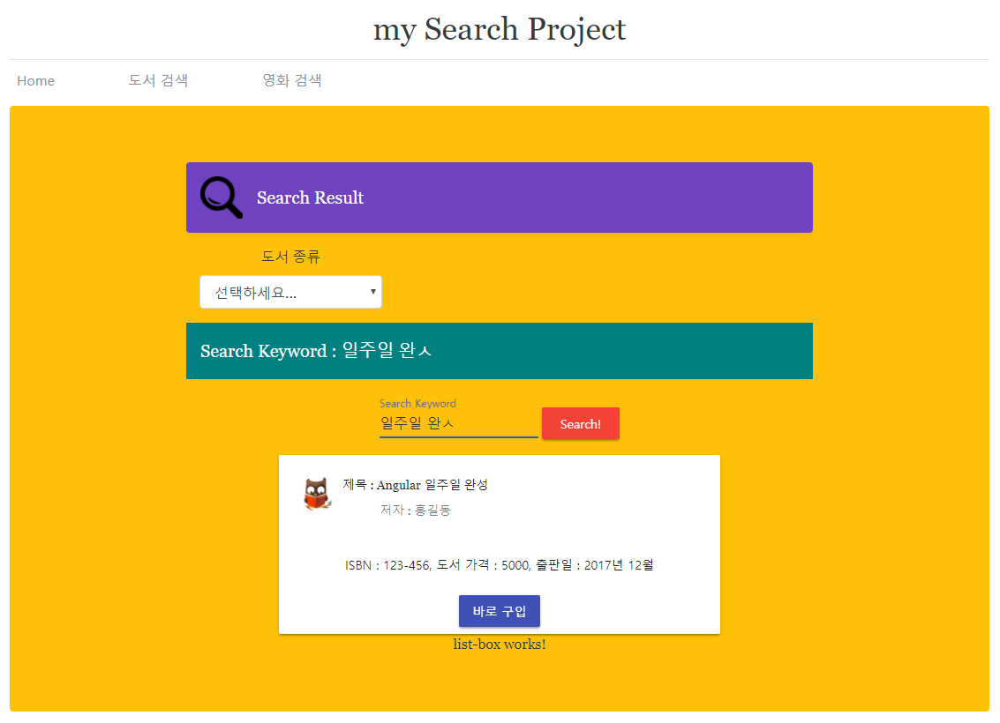
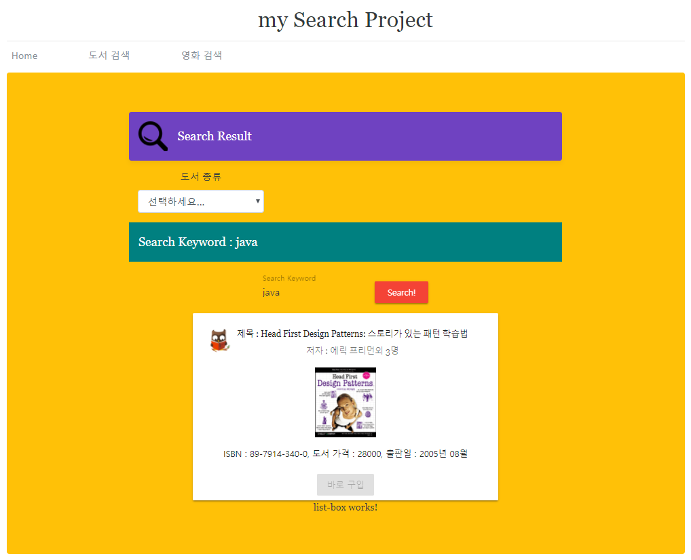

Angular 강좌(6) - Data Binding
Angular 강좌는 여러 절로 구성되어 있습니다.
- Angular 강좌(1) - Introduction
- Angular 강좌(2) - 개발환경세팅
- Angular 강좌(3) - Component
- Angular 강좌(4) - Angular Material
- Angular 강좌(5) - 실습(1)
- Angular 강좌(6) - Data Binding
- Angular 강좌(7) - 실습(2)
- Angular 강좌(8) - Material Table
- Angular 강좌(9) - 데이터공유(@Input)
- Angular 강좌(10) - 데이터공유(@Output)
- Angular 강좌(11) - 데이터공유(@ViewChild)
- Angular 강좌(12) - 데이터공유(Content Projection)
- Angular 강좌(13) - Service
- Angular 강좌(14) - Service Mediator Pattern
- Angular 강좌(15) - Service RxJS
- Angular 강좌(16) - Material Table Event
- Angular 강좌(17) - 중간 정리
- Angular 강좌(18) - Directive
- Angular 강좌(19) - Pipe
- Angular 강좌(20) - Component Lifecycle
Data Binding
Angular는 View와 Component에서 발생한 데이터의 변경 사항을 자동으로 일치시키는 기능을 제공하는데
이를 Data Binding( 데이터 바인딩 )이라고 합니다.
Angular의 데이터 바인딩은 다음과 같이 크게 두가지 종류가 있습니다.
-
Two-Way Data Binding: 일반적으로 양방향 바인딩이라고 합니다. Component와 View의 상태 정보를 자동으로 일치시켜 주는 기능입니다. -
One-Way Data Binding: 일반적으로 단방향 바인딩이라고 합니다. Component에서 View쪽으로 혹은 View에서 Component쪽으로 한 방향으로 데이터를 바인딩 해주는 기능입니다.
위와 같이 크게 두 가지 바인딩이 있지만 실제로 양방향 바인딩은 내부적으로 두개의 단방향 바인딩으로 구성됩니다. 기존 AngularJS 는 다른 방식으로 양방향 바인딩을 제공했는데 성능상의 문제가 많아서 Angular에서는 이를 단방향 바인딩 2개를 이용해서 기존의 양방향 바인딩처럼 이용할 수 있도록 제공해 주고 있습니다.
단방향 바인딩은 다음과 같이 다시 세가지 방식으로 나누어 집니다 .
Interpolation: Component에서 선언한 속성을 View에서 사용하는 경우입니다. 다음의 형태를 이용합니다.
{{ value }}
Property binding: View의 DOM이 소유한 HTML Element property를[]를 이용하여 binding하는 경우입니다. 다음의 형태로 이용합니다.
[property]="value"
Event bidning: View의 DOM에 대한 Event handler로 Component의 method를 사용하는 경우입니다. 다음의 형태로 이용합니다.
(event)="function"
위에서 간단하게 Data Binding의 종류와 형태를 살펴보았는데 이전 예제를 이용해서 각각을 코드로 살펴보겠습니다.
Interpolation
예제를 통해 interpolation의 사용법을 알아보겠습니다. 우리가 작성하고 있는 예제에서
search-box.component.html을 다음과 같이 수정합니다.
<div class="example-container">
<mat-toolbar class="search-toolbar-style">Search Keyword : {{ keyword }}</mat-toolbar>
<mat-form-field>
<input matInput placeholder="Search Keyword">
</mat-form-field>
<button mat-raised-button color="warn">Search!</button>
</div>
위의 코드에서 {{ keyword }} 부분을 찾을 수 있는데 이 표현이 바로 interpolation이라고
부르는 단방향 바인딩 입니다. keyword 라는 이름의 Component 속성을 찾아 그 값을 View에 표현하라는 것이지요.
따라서 우리의 Component에는 keyword라는 이름의 속성이 존재해야 합니다.
search-box.component.ts 파일을 열어 class안에 해당 속성을 추가합니다.
import { Component, OnInit } from '@angular/core';
@Component({
selector: 'app-search-box',
templateUrl: './search-box.component.html',
styleUrls: ['./search-box.component.css']
})
export class SearchBoxComponent implements OnInit {
keyword = 'java';
constructor() { }
ngOnInit() {
}
}
SearchBoxComponent class안의 keyword 속성에 있는 Java란 값이 View에 그대로 출력되게 됩니다. 실행시켜서 확인해
보시면 될 듯 합니다.
Event Binding
Event bidnging 역시 단방향 바인딩의 한 종류로 DOM의 Event Handler로 Component의 method를 활용할 수 있는
방법입니다.
search-box Component의 View에서 Search 버튼을 클릭하면 입력된 키워드가 위쪽 Toolbar 영역에 출력되도록
코드를 작성하면 다음과 같습니다.
아래는 수정된 search-box.component.html입니다.
<div class="example-container">
<mat-toolbar class="search-toolbar-style">Search Keyword : {{keyword}}</mat-toolbar>
<mat-form-field>
<input matInput #inputKeyword placeholder="Search Keyword">
</mat-form-field>
<button mat-raised-button color="warn"
(click)="setKeyword(inputKeyword.value)">Search!</button>
</div>
위의 코드에서 #inputKeyword 라는 걸 보실 수 있을 텐데 Angular의 Template Reference Variable입니다.
Template Reference Variable은 DOM의 HTML Element에 대한 참조 변수입니다. 쉽게 설명해서 HTML Element에
변수를 하나 지정했다고 보시면 됩니다. 이렇게 참조 변수를 선언해 놓으면 template내의 JavaScript코드에서
#기호를 제외한 변수이름으로 참조가 가능합니다.
setKeyword(inputKeyword.value)에서 알 수 있듯이 Template Reference Variable inputKeyword를 # 기호없이
사용해서 변수를 참조하고 있습니다. 입력상자이기 때문에 value속성을 이용해서 입력된 값을 알아내고 있는 거지요.
한가지 주의해야 하는 것은 이런 Template Reference Variable은 HTML Template상에서만 사용할 수 있습니다. 물론 위의 예와 같이 Event Binding을 이용해서 Component class로 전달할 수 있지만 기본적으로 Component class와는 별개로 동작합니다.
참고로 Agnular는 interpolation을 사용할 때 Safe Navigation Operator를 이용할 수 있습니다. ? 기호로 표현되며
Component class의 속성값이 null이거나 undefiend일 경우 interpolation을 이용하면 오류가 발생할 여지가 있습니다.
이때 ?를 이용하면 그런 오류를 만났을 때 처리를 종료하고 에러를 발생시키지 않게됩니다.
예를 들자면 {{ book?.btitle }} 이런식으로 사용합니다. book이라는 객체가 null인 경우 문제가 생길 수 있죠. 이런 오류를
방지할 때 사용됩니다.
아래는 수정된 search-box.component.ts 입니다.
import { Component, OnInit } from '@angular/core';
@Component({
selector: 'app-search-box',
templateUrl: './search-box.component.html',
styleUrls: ['./search-box.component.css']
})
export class SearchBoxComponent implements OnInit {
keyword = 'Java';
constructor() { }
ngOnInit() {
}
setKeyword(keyword: string): void {
this.keyword = keyword;
}
}
위의 코드는 버튼을 클릭했을 때 Template Reference Variable을 이용하여 키워드 입력상자에서 사용자가 입력한 검색 keyword 값을 가져와 Component의 method를 호출하여 Component 속성의 값을 변화시킵니다. 이렇게 변경된 Component의 속성은 interpolation을 통해 다시 View에 출력되게 됩니다.
Two-Way Data Binding
이번에는 양방향 바인딩에 대해서 알아보겠습니다. 위에서 설명한 Search버튼은 입력된 키워드를 기반으로 실제 검색을 하기 위한
버튼이지 검색어를 위쪽 Toolbar 영역에 출력하기 위한 버튼은 아닙니다.
해서 키워드 입력상자( input ) 상자에 키워드를 입력할 때 사용자가 입력한 내용이 위쪽 Toolbar 영역에
출력되도록 처리해보겠습니다.
양방향 바인딩을 사용하는 가장 쉬운 방법은 FormsModule이 제공하는 NgModel directive를 이용하는 것입니다.
따라서 먼저 FormsModule을 import하는 부분부터 처리해 주셔야 합니다. book-search.module.ts 파일에 FormsModule에
대한 import 처리를 합니다.
// 양방향 바인딩을 위한 FormsModule import
import { FormsModule } from '@angular/forms';
다음과 같이 바인딩할 요소의 속성에 [(ngModel)] 과 함께 바인딩할 대상을 선언하시면 됩니다. 다음은
수정된 search-box.component.html 입니다.
<div class="example-container">
<mat-toolbar class="search-toolbar-style">Search Keyword : {{keyword}}</mat-toolbar>
<mat-form-field>
<input matInput #inputKeyword placeholder="Search Keyword"
[(ngModel)]="keyword">
</mat-form-field>
<button mat-raised-button color="warn"
(click)="setKeyword(inputKeyword.value)">Search!</button>
</div>
실행을 시켜보시면 키워드 입력상자에 글자를 입력할 때 상단의 키워드 표시영역에 같이 출력되는 것을 보실 수 있습니다. 이렇게 양방향
바인딩이 설정되어 있을 때 사용자가 글자를 입력하면 NgModel로 바인딩한 값이 변경이 됩니다. 이 때 이벤트가 하나 발생하는데
이 이벤트를 처리하기 위해 ngModelChange를 이용할 수 있습니다.
위의 코드를 약간 수정해 다음과 같이 작성해보죠.
<div class="example-container">
<mat-toolbar class="search-toolbar-style">Search Keyword : {{keyword}}</mat-toolbar>
<mat-form-field>
<input matInput #inputKeyword placeholder="Search Keyword"
[(ngModel)]="keyword" (ngModelChange)="inputChange()">
</mat-form-field>
<button mat-raised-button color="warn"
(click)="setKeyword(inputKeyword.value)">Search!</button>
</div>
(ngModelChange)에 바인딩 된inputChange()는search-box.component.ts안에 class의 method로 정의되어 있어야 합니다. 데이터가 변경될 때 자동적으로 이벤트가 발생되고 바인딩된 method를 통해 특정 로직을 수행할 수 있습니다.
영문일 경우는 문제없이 잘 수행되지만 한글일 경우는 약간의 문제가 있습니다. 바로바로 화면에 적용되지 않는 것이죠. 양방향 바인딩은
기본적으로 문자 입력이 완료된 시점에 compositionend라는 browser 이벤트가 발생하고 이에 따라 바인딩을 처리합니다. 하지만
영문과 다르게 한글은 조합형 문자이기 때문에 글자가 다 만들어 지기 전까지는 해당 이벤트가 발생하지 않고 따라서 화면에 출력되지
않게 되는 것입니다.
이 문제를 해결하기 위해서는 Angular에서 제공하는 COMPOSITION_BUFFER_MODE 설정을 변경하시면 됩니다. 설정하는 방법은 아래의
코드를 참조하시면 됩니다.
아래는 book-search.module.ts 파일 입니다.
import { NgModule } from '@angular/core';
import { CommonModule } from '@angular/common';
import { BookSearchMainComponent } from './book-search-main/book-search-main.component';
import { SearchBoxComponent } from './search-box/search-box.component';
import { ListBoxComponent } from './list-box/list-box.component';
import { DetailBoxComponent } from './detail-box/detail-box.component';
import { MatFormFieldModule } from '@angular/material/form-field';
import { MatInputModule } from '@angular/material';
import { MatButtonModule } from '@angular/material/button';
import { MatToolbarModule } from '@angular/material/toolbar';
import { MatCardModule } from '@angular/material/card';
// 양방향 바인딩을 위한 FormsModule import
import { FormsModule } from '@angular/forms';
// COMPOSITION_BUFFER_MODE import
import { COMPOSITION_BUFFER_MODE } from '@angular/forms';
@NgModule({
imports: [
CommonModule,
MatFormFieldModule,
MatInputModule,
MatButtonModule,
MatToolbarModule,
MatCardModule,
FormsModule
],
providers: [
{
provide: COMPOSITION_BUFFER_MODE,
useValue: false
}
],
declarations: [BookSearchMainComponent,
SearchBoxComponent,
ListBoxComponent,
DetailBoxComponent]
})
export class BookSearchModule { }

Property Binding
Property binding을 이용하면 DOM 상의 HTML Element에 대한 property를 Component의 속성과 바인딩 할 수 있습니다. 주의하실 점이
하나 있는데 property binding은 HTML Element의 Attribute에 값을 binding하는 것이 아니라 HTML이 browser에 의해 parsing되면
메모리에 DOM이 생성되는데 이 DOM의 HTML ELement에 대한 property에 값이 binding된다는 것입니다.
이번에는 detail-box Component를 이용해서 한번 알아보죠.
일단 완성된 화면은 다음과 같습니다.

제목, 저자, ISBN, 가격, 출판일, 이미지 정보는 interpolation을 이용해 출력하고 property binding을
이용하여 만약 책의 가격이 20000을 초과하면 구입버튼을 disabled 시키게 처리했습니다.
detail-box-component.css에서 사용된 CSS는 다음과 같습니다.
.example-card {
width: 500px;
margin: 0 auto;
}
.example-header-image {
background-image: url('/assets/images/book-icon.jpg');
background-size: cover;
}
.book-image {
width: 100px !important;
}
.detail-header-style {
font-family: Georgia;
}
아래는 detail-box.component.html 입니다.
<mat-card class="example-card">
<mat-card-header class="detail-header-style">
<div mat-card-avatar class="example-header-image"></div>
<mat-card-title>제목 : {{book.btitle}}</mat-card-title>
<mat-card-subtitle>저자 : {{book.bauthor}}</mat-card-subtitle>
</mat-card-header>
<img mat-card-image class="book-image" src="{{book.bimgurl}}">
<mat-card-content>
<p>
ISBN : {{book.bisbn}}, 도서 가격 : {{book.bprice }}, 출판일 : {{book.bdate}}
</p>
</mat-card-content>
<mat-card-actions>
<button mat-button
mat-raised-button color="primary"
[disabled]="book.bprice > 20000">바로 구입</button>
</mat-card-actions>
</mat-card>
book 객체의 속성으로 바인딩 시켰습니다. 당연히 detail-box.component.ts 안에 class 속성으로 book 객체가 정의되어 있겠네요.
주의해서 보셔야 할 부분은
<button mat-button
mat-raised-button color="primary"
[disabled]="book.bprice > 20000">바로 구입</button>
부분입니다. disabled 라는 속성에 property binding을 이용해 조건을 걸었습니다.
현재 책 값이 20000원을 초과하면 “바로 구입”버튼을
비활성화 시키는 것이죠. 사용하는 법을 잘 기억해 두시면 될 듯 합니다.
다음은 데이터가 들어있는 detail-box.component.ts 입니다.
import { Component, OnInit } from '@angular/core';
@Component({
selector: 'app-detail-box',
templateUrl: './detail-box.component.html',
styleUrls: ['./detail-box.component.css']
})
export class DetailBoxComponent implements OnInit {
book = {
btitle: 'Head First Design Patterns: 스토리가 있는 패턴 학습법',
bauthor: '에릭 프리먼외 3명',
bprice: 28000,
bdate: '2005년 08월',
bisbn: '89-7914-340-0',
bimgurl: 'http://image.hanbit.co.kr/cover/_m_1340m.gif'
};
constructor() { }
ngOnInit() {
}
}
이번 포스트에서는 Angular의 Data Binding에 대해서 살펴보았습니다. 다음 포스트는 지금까지 배운 내용과 Directive에 대한 내용을 섞어 약간 복잡하지만 책의 리스트를 출력하는 list-box Component와 연결된 View를 살펴보도록 하겠습니다. 먼저 기본적인 HTML Table Element을 이용해 보고 그 다음에 Angular Material Table Component을 이용해 리스트를 출력해보도록 하겠습니다.
End.
Angular 강좌는 아래의 책과 사이트를 참조했습니다. 조금 더 자세한 사항을 알고 싶으시면 해당 사이트를 방문하세요!!
- Angular Official HomePage
- Angular Material Official HomePage
- Build a Mobile App with Angular 2 and Ionic 2
- Angular 첫걸음 - 한빛미디어
- 제대로 배우는 Angular 4 - 비제이퍼블릭